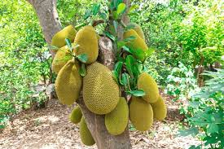

Info Tanaman Banyumanik

Nangka
Kingdom: Plantae
Divisi: Tracheophyta
Class: Magnoliopsida
Ordo: Rosales
Famili: Moraceae
Genus: Artocarpus
Spesies: Artocarpus heterophyllus
🌱 Budidaya
- Lingkungan: Tanah subur, gembur, dan tidak tergenang. Tumbuh baik di dataran rendah hingga 800 mdpl.
- Penanaman: Jarak tanam 8–10 meter antar pohon. Lubang tanam 60x60x60 cm, isi pupuk kandang.
- Perawatan: Siram rutin saat musim kering. Pupuk setiap 3 bulan sekali (organik + NPK). Pangkas cabang bawah dan yang tidak produktif.
💡 Fun Fact
"Dua Tekstur, Dua Sensasi" — Daging buah nangka ternyata terbagi menjadi dua jenis: kletuk yang kenyal dan gandul yang lembek. Keduanya menawarkan pengalaman rasa yang berbeda, namun tetap digemari sebagai buah meja maupun olahan kuliner.
🍃 Manfaat
- Buah nangka kaya akan serat, vitamin A, dan kalium yang baik untuk sistem pencernaan dan tekanan darah.
- Buah dan biji nangka dapat diolah menjadi produk usaha seperti keripik, dodol, dan kolak.
- Pohon nangka yang besar dan rindang dapat digunakan untuk penghijauan dan peneduh alami.